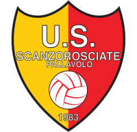
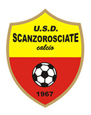
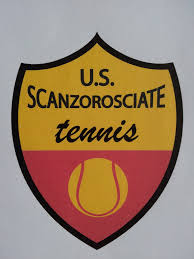

Manifestazioni sportive
Da sempre il Comune di Scanzorosciate riconosce nello sport un valore fondamentale per la crescita della persona e della comunità. Le società sportive del territorio rappresentano un punto di riferimento educativo, sociale e aggregativo, offrendo a bambini, giovani e adulti l’opportunità di praticare attività sportive, condividere valori come il rispetto, l’impegno e il gioco di squadra, e vivere momenti di incontro e inclusione.
Grazie al lavoro costante di volontari, allenatori e dirigenti, lo sport a Scanzorosciate è da sempre sinonimo di partecipazione, benessere e senso di appartenenza.
U.S. Scanzorosciate Pallavolo

La pallavolo a Scanzorosciate rappresenta una realtà sportiva viva e radicata nel territorio. Le società di pallavolo operano principalmente nelle palestre comunali, strutture attrezzate che ospitano allenamenti e partite durante tutta la stagione sportiva. Le squadre, suddivise per fasce d’età e categorie, coinvolgono bambini, ragazzi e adulti, promuovendo non solo l’attività agonistica ma anche valori fondamentali come il rispetto, la collaborazione e la crescita personale. Grazie all’impegno di allenatori, dirigenti e volontari, la pallavolo contribuisce in modo significativo alla vita sportiva e sociale della comunità di Scanzorosciate.
Se sei interessato ad iscriverti, compila il seguente form
U.S. Scanzorosciate Calcio

Il calcio a Scanzorosciate non è solo uno sport, ma una vera e propria tradizione che unisce la comunità. Le squadre locali, dai ragazzi delle giovanili agli adulti, vivono la passione del gioco tra tornei, campionati amatoriali e partite di quartiere. I campi del paese diventano un luogo di incontro, dove giovani e meno giovani condividono emozioni, amicizie e la voglia di migliorarsi. Eventi, sfide e iniziative sportive coinvolgono tutta la cittadinanza, rendendo il calcio un simbolo di socialità e partecipazione, come l' inaugurazione del nuovo campo in erba sintetica di Negrone, un simbolo di vicinanza nello sport e nella vita quotidiana!
Vieni a scoprirne di più! clicca qui!
Se sei interessato ad iscriverti compila il seguente form
U.S. Scanzorosciate Tennis

A Scanzorosciate il tennis è uno sport che combina tecnica, strategia e piacere di stare insieme. Le lezioni e i campi locali offrono spazi per tutti: dai principianti che vogliono muovere i primi colpi, ai più esperti che partecipano a tornei e gare amatoriali.Gli incontri e le attività organizzate dai club, sia tornei che giornate dedicate alla beneficenza e alla solidarietà nello sport, animano la vita sportiva del paese, creando momenti di socialità e competizione sana. Il tennis a Scanzorosciate è un’occasione per migliorare abilità, mantenersi in forma e vivere lo sport in un contesto familiare e accogliente.
Se sei interessato ad iscriverti compila il seguente form